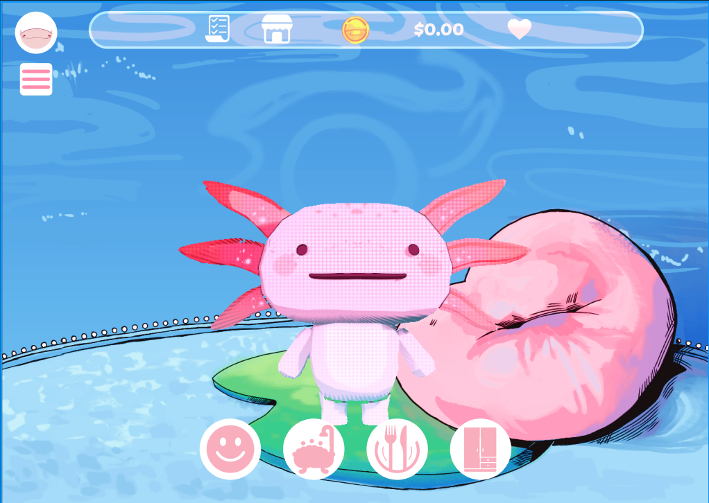

Hola, soy Jorge
Estudiante de desarrollo de software
León, Guanajuato, México
Conoce mis hobbies o ve directo a mis proyectos.
Mi autobiografía
Me llamo Jorge Alberto y soy estudiante de tecnología. Desde que escribí mi primera página web supe que quería crear cosas que la gente pueda usar. Me gusta entender cómo funcionan los sistemas por dentro: desde el diseño de una base de datos hasta la pantalla que ve el usuario.
En la escuela he trabajado en proyectos individuales y en equipo. Aprendí que programar es solo la mitad del trabajo: la otra mitad es coordinarse, documentar y explicar lo que hiciste con claridad.
Fuera de la pantalla disfruto de la música, de salir con mi familia y de aprender cosas nuevas por mi cuenta. Si quieres saber más, mira la página de gustos y hobbies.
Lema personal: aprender un poco cada día.

Mis proyectos en la escuela
| Proyecto | Tecnología | Tipo |
|---|---|---|
| Fiesta Perfecta | Diseño de bases de datos | Individual |
| Biblioteca | Java (NetBeans, MVC) | Individual |
| Gota: tu ajolote virtual | Proyecto integrador | Equipo |
| Agenda de talleres mecánicos | Aplicación web | Equipo |
Lo que más me ha gustado
- Diseñar bases de datos ordenadas.
- Programar en Java con el patrón MVC.
- Armar interfaces web claras y fáciles de usar.